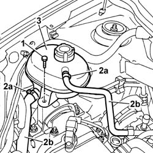
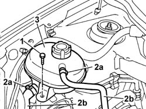

1088B10 engine cooling tank - r + r
- Path
- Procedures > 10 ENGINE UNIT > 1088 ENGINE COOLING > 1088B ENGINE COOLING RADIATOR > 1088B10 engine cooling tank - r + r
- Kind
- repair procedure (removal / refitting; the operation number is the code)
- Applies to
- all engines; all production periods
- Interactive page
- https://sloeber94.github.io/elrnDB-fPnd/en/#/2752536
Applies to: engines: 1.1; all production periods; only with equipment: Air Conditioner
 Removing
Removing
 Refitting
Refitting1. Undo the retaining bolt.
2. Open the fastening bands (2a) and disconnect the coolant pipes (2b).
3. Remove the engine coolant reservoir.

Applies to: engines: 1.2 8v; all production periods; only with equipment: Air Conditioner
Removing
Refitting1. Undo the retaining bolts
2. Open the fastening bands (2a) and disconnect the coolant pipes (2b).
3. Remove the engine coolant reservoir.
Applies to: engines: 1.3 JTD 16v; all production periods
Removing
Refitting1. Undo retaining bolts
2. Open the fastening bands (2a) and disconnect the coolant pipes (2b).
3. Remove the engine coolant reservoir.

Applies to: engines: 1.1; all production periods; only with equipment: Air Conditioner
Refitting
RemovingFit the engine coolant reservoir.
Fit the coolant pipes in the special housings and refit the fastening bands.
Tighten the bolt fixing the engine coolant reservoir.
Applies to: engines: 1.2 8v; all production periods; only with equipment: Air Conditioner
Refitting
RemovingFit the engine coolant reservoir.
Fit the coolant pipes in the special housings and refit the fastening bands.
tighten the bolt fixing the engine coolant reservoir.
Applies to: engines: 1.3 JTD 16v; all production periods
Refitting
RemovingFit the engine coolant reservoir.
Fit the coolant pipes in the special housings and refit the fastening bands.
Tighten the bolt fixing the engine coolant reservoir.
Topics linked from this page (1)
Topics that link to this page (18)
- 0510A20 timing gear with belt drive - check - carry out operation with cam cover(s) removed and tappets adjusted
- 0510A30 cam lift - check with cam cover(s) removed
- 1004B12 power unit with manual gearbox - r+r for versions with a/c
- 1004B13 POWER UNIT WITH MECHANIC TRANSMISSION - R.R. FOR MODELS WITH AIR-CONDITIONER AND FOUR-WHEEL DRIVE
- 1016B10 single cylinder head extension - change gasket
- 1020B12 CHAIN-DRIVE VALVE GEAR COVER - R.R. AND GASKET REPLACEMENT FOR MODELS WITH AIR-CONDITIONER
- 1028H11 piston connecting rod set - r r
- 1028H21 piston with connecting rod - r r
- 1032A12 CHAIN AND GEARS for timing system - R.R. for timing or Replacement.
- 1032B47 toothed drive pulley - r r for versions with air conditioner
- 1032B62 a/c duct pulley - r r
- 1032C40 Timing CHAIN TENSIONER PLATE - R.R.
- 1036H57 hydraulic tappets all r r
- 1036L10 camshafts in cylinder head extension - r r - includes cylinder head extension replacement if necessary
- 1084B16 engine oil pump - r+r vehicles with a/c
- 1084B26 emgine oil intake duct - r r
- 1084B45 RIGID air supply PIPE between air-air heat exchanger and intermediate hose - R.R.
- 1092B42 Air conditioning compressor and alternator drive belt TENSIONER - R.R.